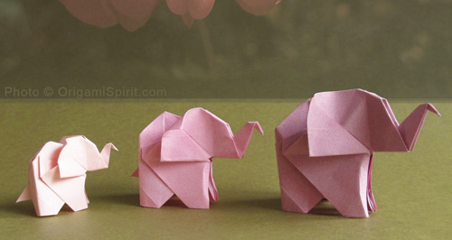
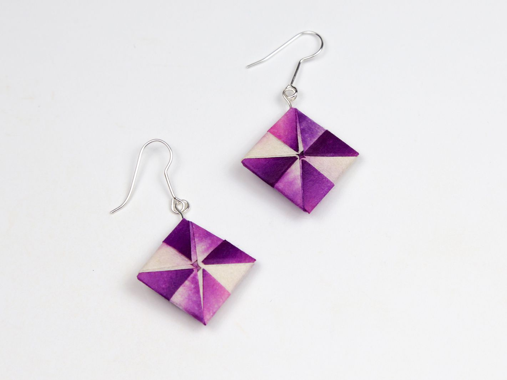

WHAT IS ORIGAMI
Origami is the art of paper-folding. Its name derives from Japanese words ori (“folding”) and kami
(“paper”). Traditional origami consists of folding a single sheet of square paper (often with a
colored side) into a sculpture without cutting, gluing, taping, or even marking it.
WHY DO ORIGAMI
Origami helps develop hand-eye coordination, fine motor skills and mental concentration. Use of the
hands directly stimulates areas of the brain. Origami is used in various therapeutic settings,
including art therapy and in stroke and injury rehabilitation.
there are many a things that you can create with the slightly underrated art of origami, I have
picked out a few of my favourites to share with you, I hope you all have as much fun in making them as I do
in shring them with you.
Click on this crane image to learn how to make an origami crane 👆

Click on this elephant image to learn how to make an origami elephant 👆

Click on this earring image to learn how to make an origami geometric earring 👆